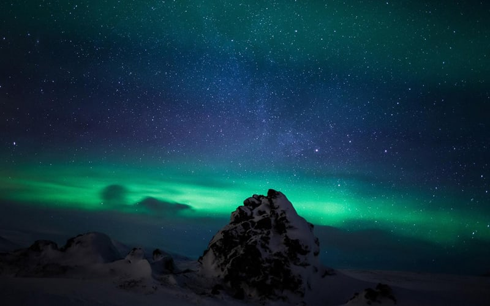

Neymiş Bu Kuzey Işıkları, İzlanda Felan?..
Anlatacaklarını başlıklara böl, acelem var dersen:
- Ne zaman gideyim? -- Eylül-Aralık en iyi sezon diyolar.
- Nerde kalayım? -- Bence hafif turistik bölgenin dışında kal, oradaki yaşamı teneffüs et.
- Neyi, nerde yiyeyim? -- Kurutulumş morina balığı dene bence.
- Ne giyeyim? -- Sıkı giyin, gerisini düşünme derim ben.
*Bonus: Norveç'li balıkçıların kullandığı kremlerden de al yanına ;)